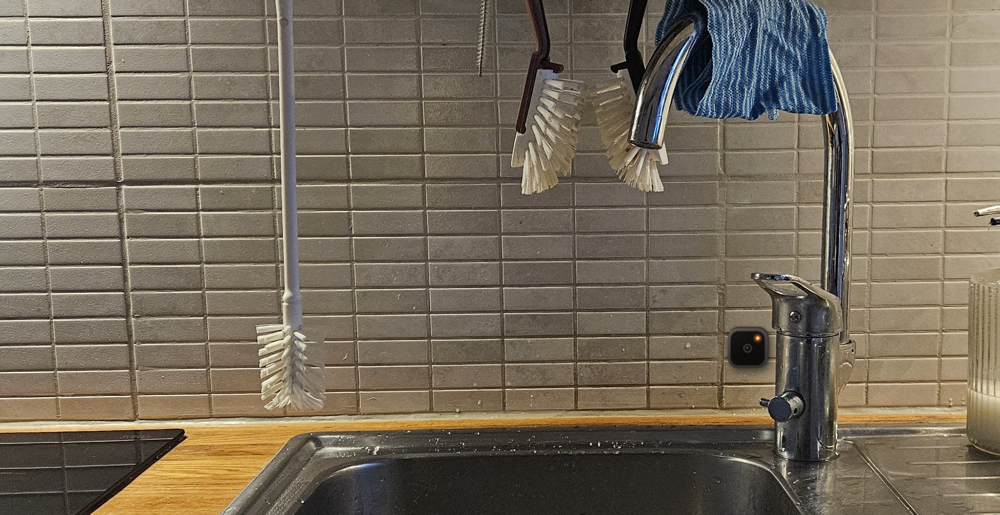
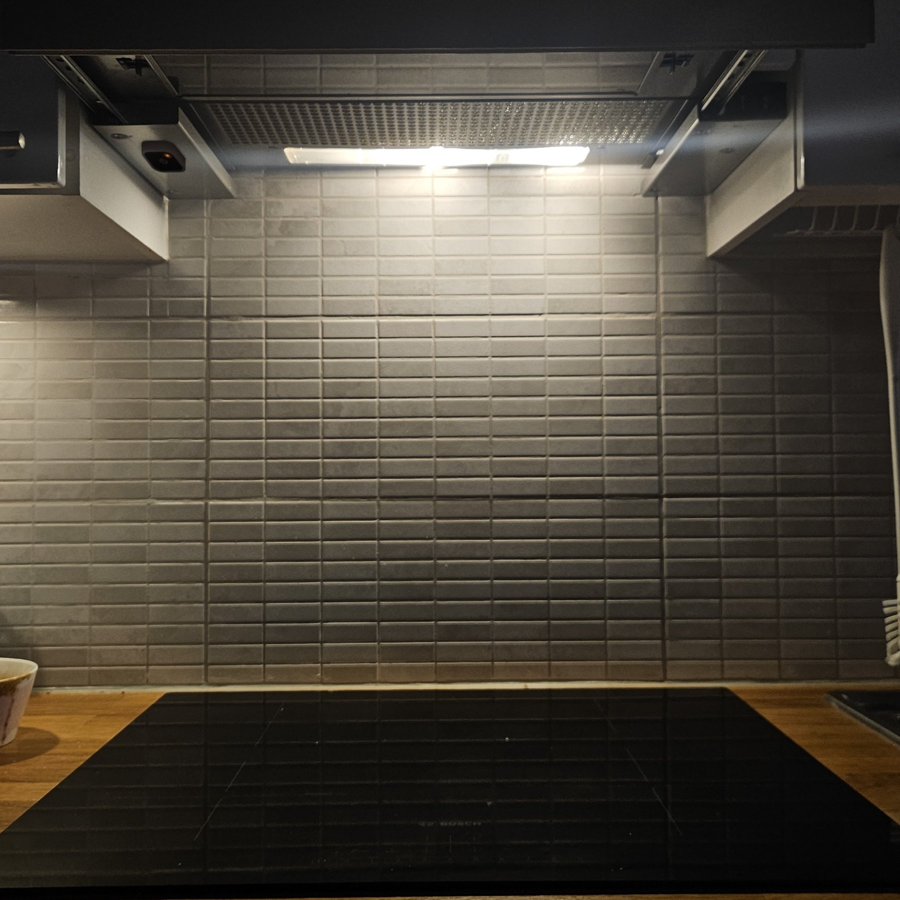
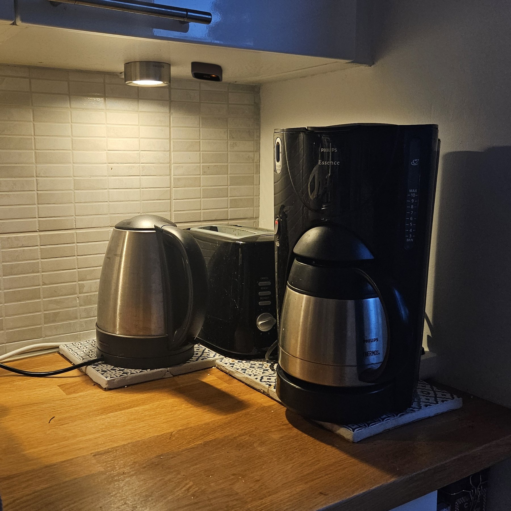
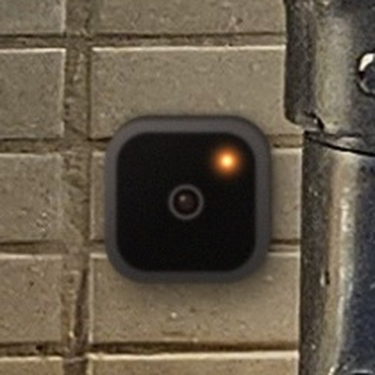
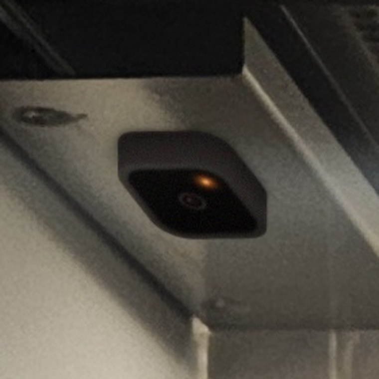
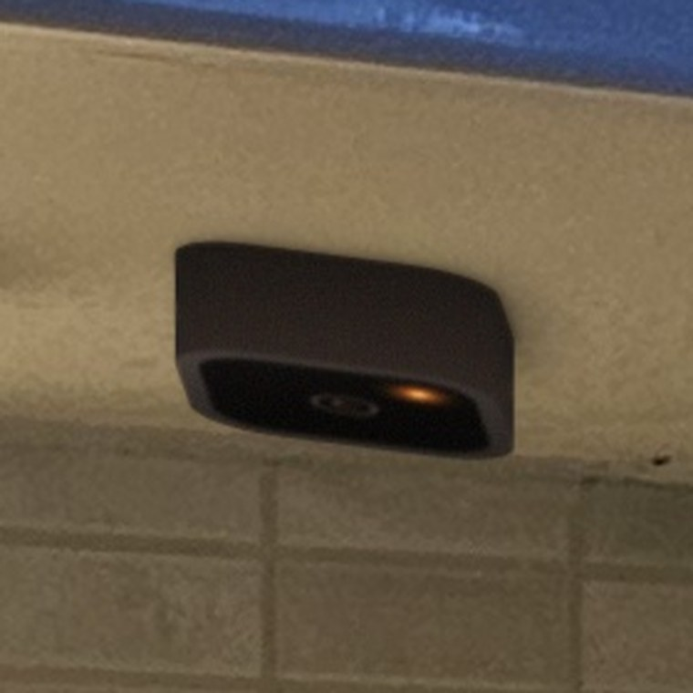

Miten se
toimii.
- 1. Kiinnitä.
Tarra, magneetti tai pidike. Ei putkimiestä.
- 2. Kalibroi kerran.
Sen jälkeen sensori hoitaa loput.
- 3. Seuraa puhelimesta.
Missä ikinä oletkin.

Tiskikoneen hana
Liesi
Kahvinkeitin

